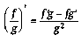
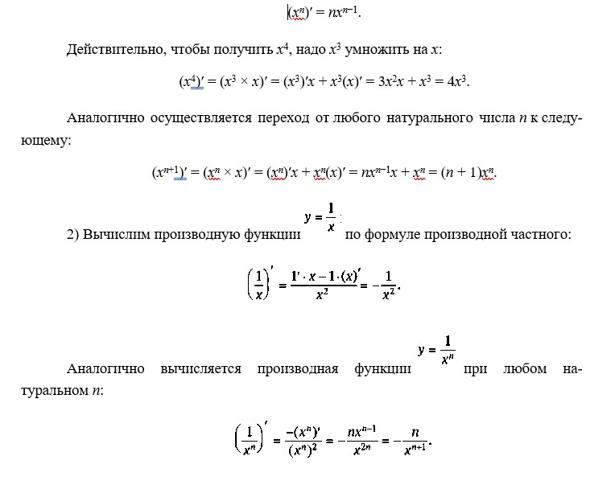
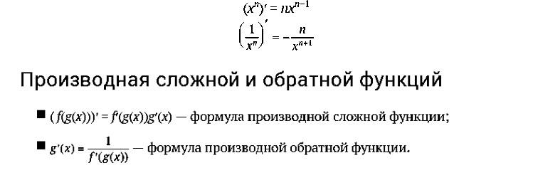
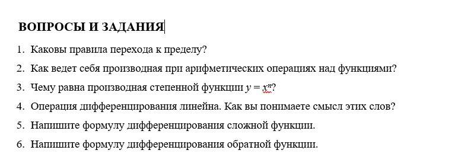

Правила вычисления производных
1. Правила перехода к пределу. Так как производная определена с помощью понятия предела, вспомним основные правила обращения с пределами:
- предел постоянной равен самой постоянной;
- предел суммы равен сумме пределов;
- постоянный множитель можно выносить за знак предела.
Эти правила позволяют вычислить производные некоторых простейших функций.
Результаты первых двух примеров очевидны с точки зрения механики. Если функцию y = f(x) понимать как закон движения по оси y в зависимости от времени x, то линейная функция от x описывает равномерное движение, скорость которого совпадает со средней скоростью на любом интервале изменения времени.
2.Правила вычесления производной.
- ( f + g)′ = f′ + g′ — производная суммы равна сумме производных;
- (cf)′ = cf′ — постоянный множитель можно выносить за знак производной;
- (f · g)′ = f′g + fg′ — формула для производной произведения;
— формула для производной частного.
Первые два правила соответствуют понятию линейности операции дифференцирования.
С помощью правил вычисления производной можно найти производные рациональных функций.
1) Формула производной произведения позволяет найти производную любой степени. Мы вычислили по определению следующие производные: (x)′ = 1, (x 2 )′ = 2x, (x 3 )′ = 3x 2 .
Легко догадаться, что при любом натуральном n формула должна иметь такой вид:

Заметим, что эту формулу можно переписать так: (x −n )′ = (−n)x −n−1. Видим, что она аналогична формуле производной степени с натуральным показателем. Можно объединить две формулы в одну, верную как при положительных, так и при отрицательных целых числах: (x k )′ = kxk−1. Формально она верна и при k = 0. Далее будет показано, что она верна не только при целых, но и при любых вещественных k.

